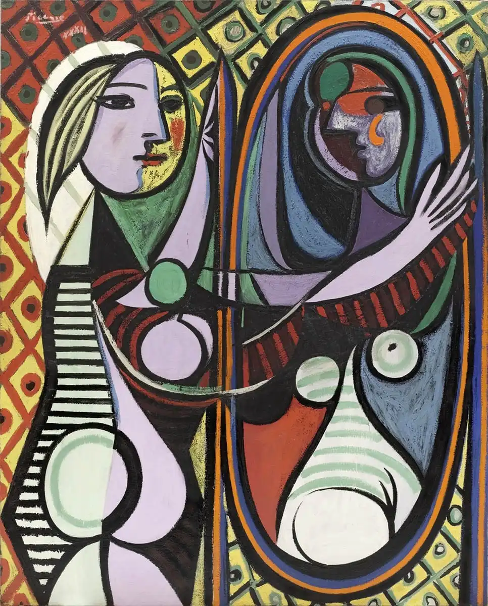

18 June 2024
the only child

dear you,
i am tethered to the loneliness i wandered through as a child. learning new ways to play alone, how to grow up all by myself. i wished for hand-me-downs and someone on the other side of the seesaw. sometimes i think about the siblings i never had, the sisters i always craved, the brothers i never met. it is as though there has been something missing my entire life, this unfillable pit, begging to be filled, to be whole. i enjoyed having the backseat of the car to myself, before i realised that i only had the windows for company. there are no plates in my mother’s house from 2007 decorated with childish drawings made by anyone but me. it is the never knowing, the never understanding of that soul connection between siblings that hurts the most. perhaps i can live with it always being my turn in my made up games, but i am not sure i can deal with the silence that follows my solitary victories. the echoes of laughter never shared seems to wrap around my bones.
each christmas and every milestone feels a little bit lonelier without someone my age to reminisce on holidays past, without someone to share the same memories. it worries me now more than ever, as my mother grows older and i am the only one to watch her age. who will be with me afterwards? who will let me cry on their shoulder, again and again, as we relive the echoes of our conjoined pasts? there is a certain kind of grief in knowing that one day i will be the only one who knows my mother’s stories. nobody will ever truly understand the connection between myself and her, just as i will never truly know how it feels to share a lifetime with a sibling. it is a unique loneliness.
it is in the quiet moments that i feel this loneliness so deeply, watching others cradle their nieces and nephews. there is always a whisper of what could have been, what different a person it might have made me. possibilites that i will never know, and always desire. i grew up with the reflection in the mirror, where my mother’s face has begun to stare back at me.
yours, kate
(artwork: girl before a mirror by pablo picasso)